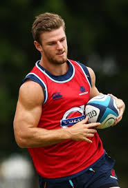

1. Juan Martínez de Irujo (Socio Honorífico)
Edad: 62 años
Motivo: Exjugador y fundador del club, clave en la consolidación del rugby en Pamplona y Navarra. Dedicó más de 35 años al club, promoviendo el deporte y los valores del rugby.
Distinciones: Nombrado socio honorífico en 2015.
